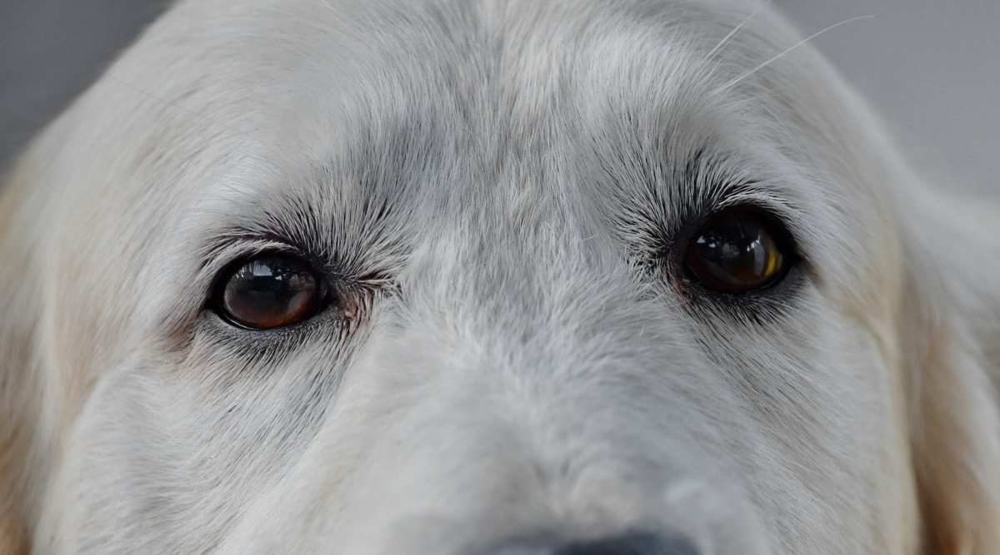
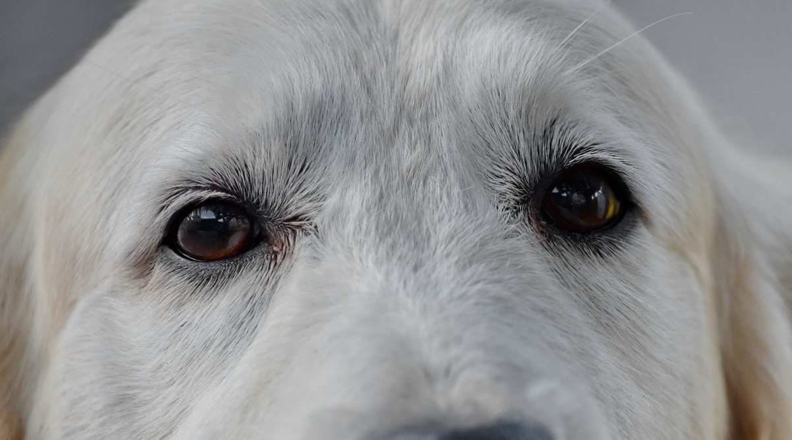

ç›®ëˆˆì€ 그 éˆé‚ì˜í˜¼ì˜ 窓창ì´ë‹¤.
The eyes are the window of our soul.
우리가 보는 것은 우리의 éˆé‚ì˜í˜¼ì— åæ˜ ë°˜ì˜ëœë‹¤.
What we see is reflected in our souls.
본다는 것은 안다는 것이고 , 안다는 것ì€
행한다는 것이다.
To see means to know, and to know means to do.


 
